速览
特效（Effect）就是画面效果，比如打到对手时冒出的火花。这个分类讲樱井在监修范围内处理的那些抽象特效表现。所谓特效，很多是用颜色加算绘制的：例如画一个爆炸或闪光的特效，用颜色加算叠在背景上，背景的颜色会加上特效的颜色、趋近白色——不是趋近原来特效的颜色，所以和单纯的半透明不同。一层层叠加，就相当像样了。但不能太依赖颜色加算特效：好处是比较简单的图也能看起来像样，但也仅此而已；整体会太朦胧，失去手感和张弛，太亮；而且只有在画面暗的地方才显眼。为了展示它而做成一直很暗的游戏也许可以，但有点不够。推荐的是和清脆的特效并用：把画得很到位的特效用多边形或实色图加进去，以它为主体。《大乱斗 特别版》所有特效都以清脆的动画风为目标并实践。特效容易偏亮，所以为了在更亮的画面中也看得见、有张弛，混入暗色也很有效。不限于特效，设计什么东西时，多数情况下最好用相反的东西来衬托：在只有曲线的表现里加入直线等，做出张弛吧。
1. 特效分类开篇 0:03
特效就是画面效果，比如打到对手时冒出的火花。这个分类讲樱井在监修范围内处理的抽象特效表现。
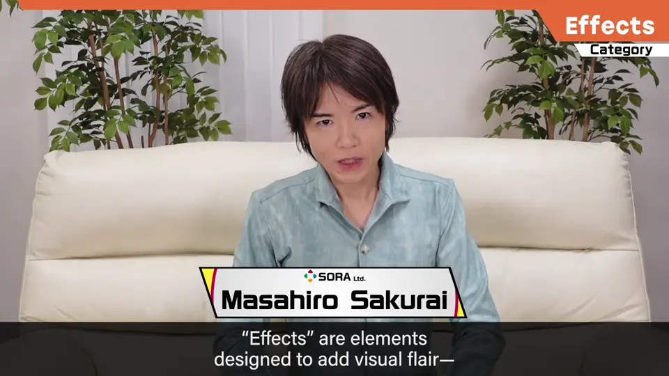
2. 颜色加算 0:22
很多特效是用颜色加算绘制的。例如画一个爆炸或闪光的特效，用颜色加算叠在背景上：
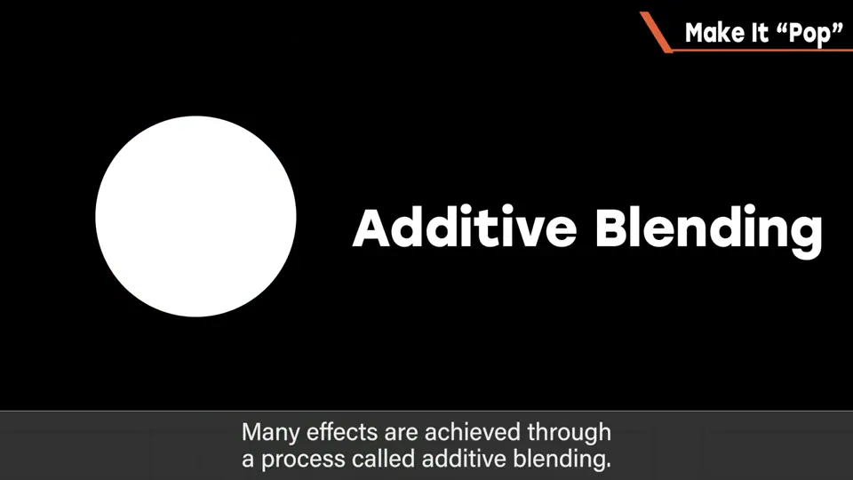
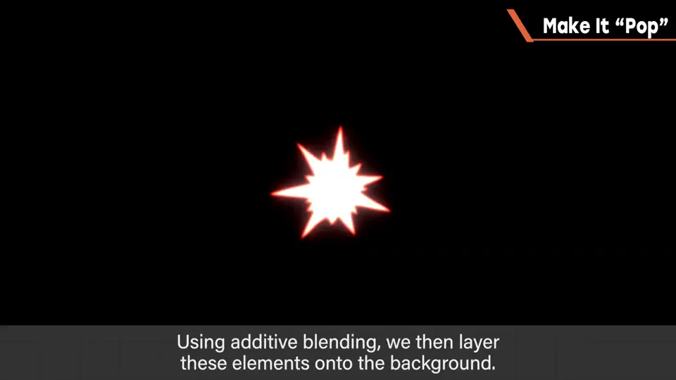
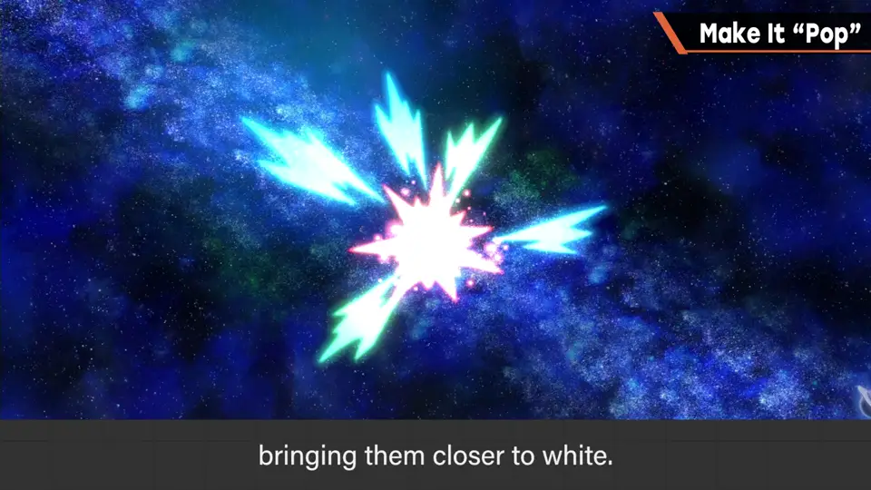
一层层叠加，就相当像样了。
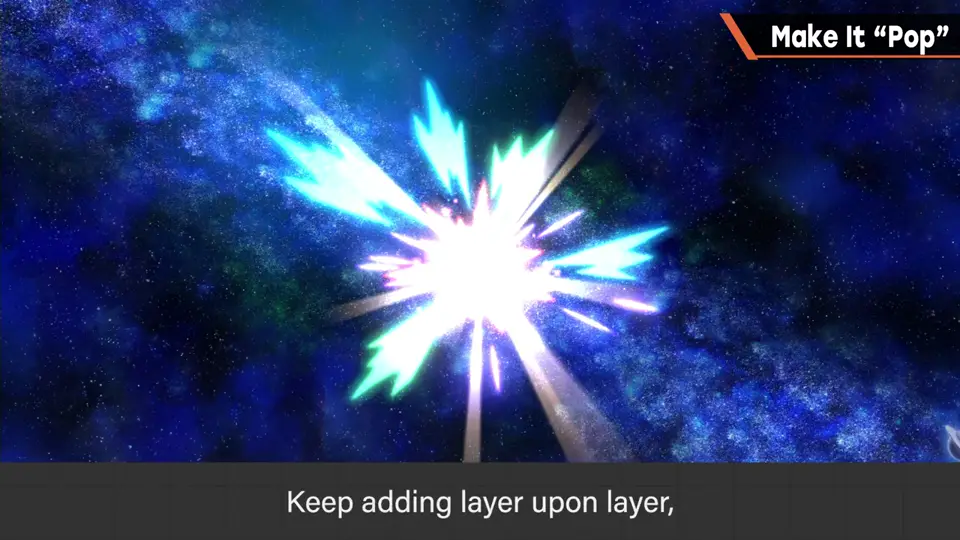
3. 别依赖加算 0:54
但不能太依赖颜色加算特效：好处是比较简单的图也能看起来像样，但也仅此而已。
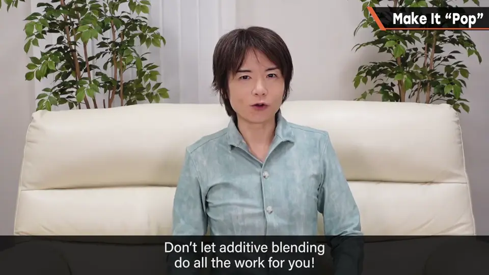
- 整体太朦胧，失去手感和张弛。
- 太亮。
- 只有在画面暗的地方才显眼。
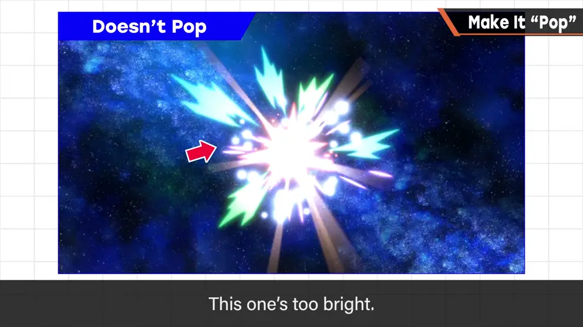
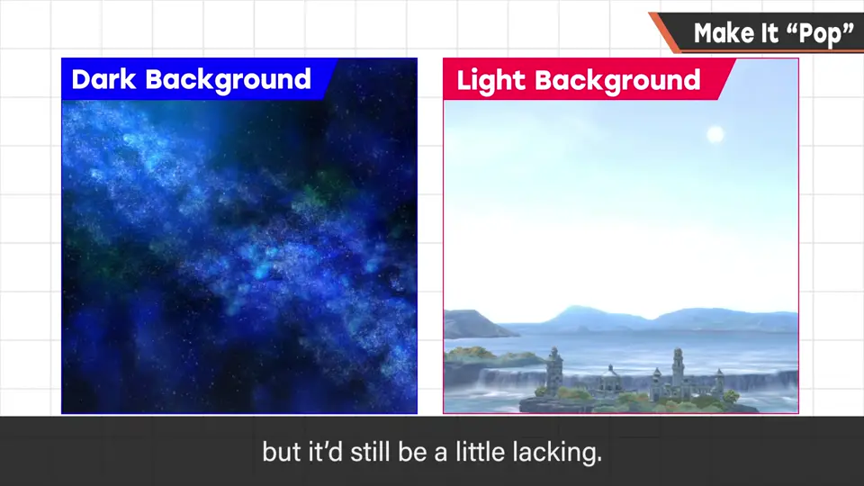
为了展示它而做成一直很暗的游戏也许可以，但还是有点不够。
4. 清脆特效并用 1:25
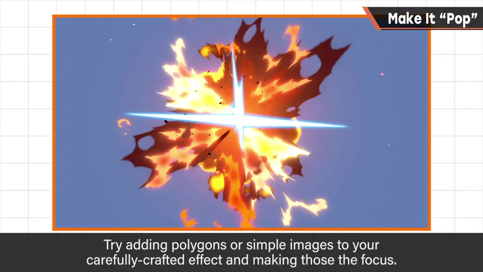
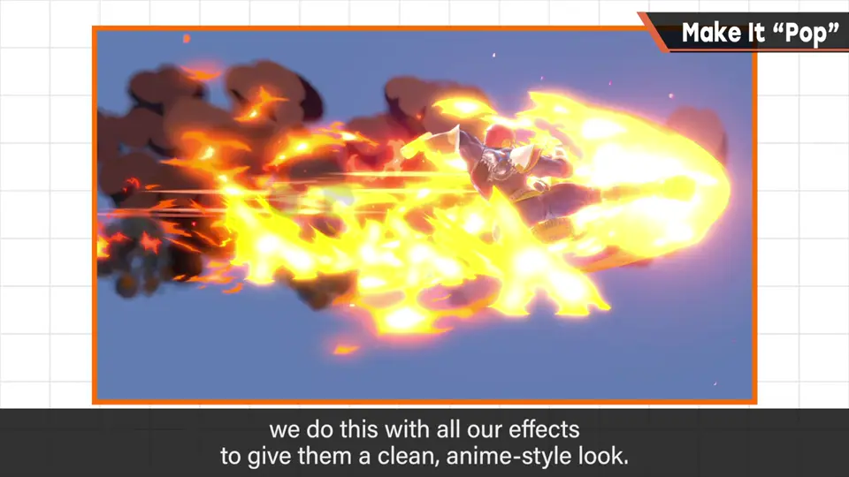
《大乱斗 特别版》所有特效都以清脆的动画风为目标并实践。
特效容易偏亮，所以为了在更亮的画面中也看得见、有张弛，混入暗色也很有效。
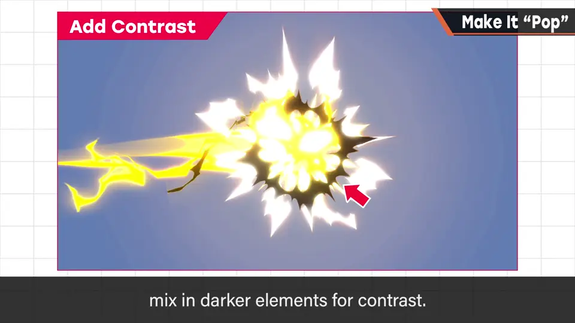
5. 用相反的东西衬托 2:04
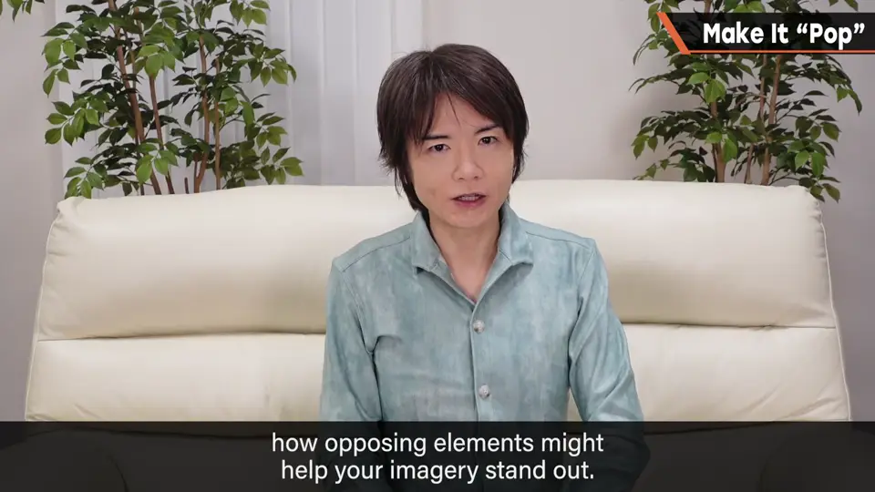
自测题
1. 颜色加算和半透明有什么不同？
加算是把颜色加到背景上，结果趋近白色；不是趋近特效原色。 0:40
2. 过度依赖加算特效有哪些问题？
太朦胧、失去张弛、太亮、只在暗背景显眼。 1:10
3. 樱井推荐怎么做？
以清脆的多边形/实色特效为主体，与加算并用，并混入暗色形成对比。 1:40